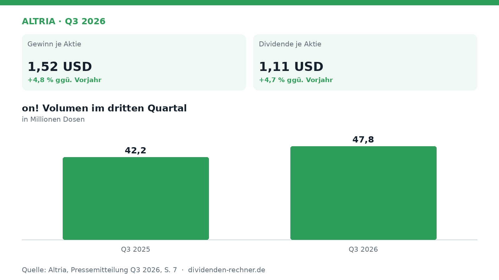
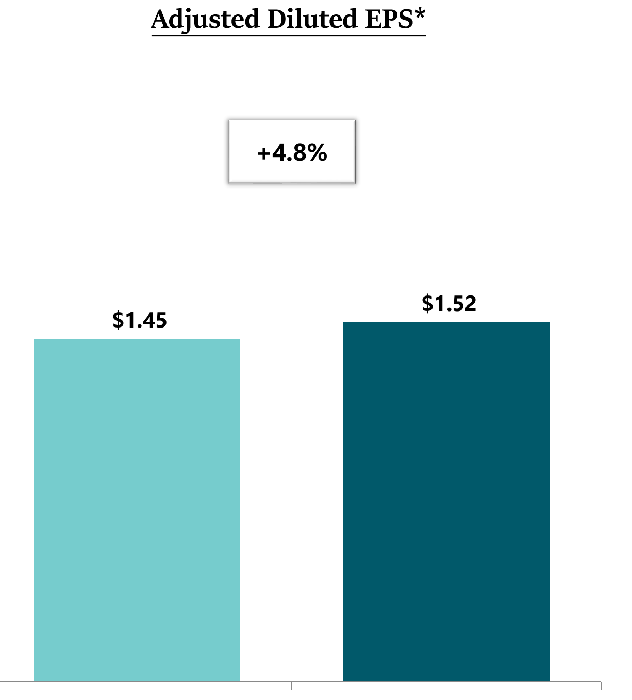
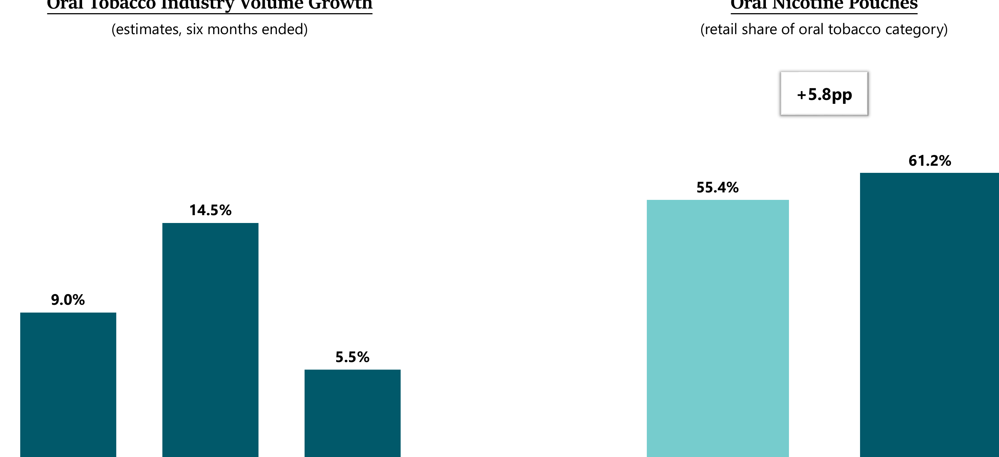

Quartalszahlen

Altria steigert bereinigten Gewinn je Aktie im dritten Quartal
Altria veröffentlicht die Zahlen für das dritte Quartal 2026. Der bereinigte Gewinn je Aktie legt zu, während das Nikotinbeutel-Segment wächst.

Kurz gesagt
Umsatz: n.a. · Gewinn: 1,52 USD (+4,8 %)
- Ergebnis: Der bereinigte Gewinn je Aktie legt im dritten Quartal zu.
- Treiber: Das Segment der rauchbaren Produkte und der Nikotinbeutel on! wachsen.
- Risiko: Der anhaltende Wandel im Tabakmarkt und der Druck auf klassische Zigaretten bleiben eine Herausforderung.
Altria wächst beim bereinigten Gewinn im dritten Quartal 2026
Im dritten Quartal 2026 verzeichnet der Tabakkonzern Altria einen Anstieg seines bereinigten Gewinns je Aktie. Das Unternehmen profitiert dabei von einer stabilen operativen Entwicklung im Segment der rauchbaren Produkte sowie von Zuwächsen bei rauchfreien Alternativen. Die vorgelegten Zahlen verdeutlichen, dass das Management in einem anspruchsvollen Marktumfeld profitabel agiert.

Eigene Darstellung nach Daten aus: Altria, Quartalszahlen Q3 2026 vom 2026-10-29.Ergebnisplus durch stabile Marken und das Nikotinbeutel-Geschäft
Im dritten Quartal kletterte das bereinigte verwässerte Ergebnis je Aktie auf 1,52 USD, was einem Zuwachs von 4,8 % gegenüber dem Vorjahreswert von 1,45 USD entspricht.

Bereinigtes verwässertes Ergebnis je Aktie. Quelle: Altria, Quartalszahlen Q3 2026 vom 2026-10-29, S. 3. Ausschnitt nur zugeschnitten, sonst unverändert. Ein zentraler Treiber dieser Entwicklung waren die rauchbaren Produkte, die ein bereinigtes operatives Ergebnis von 3,072 Milliarden USD und damit einen Zuwachs von 3,9 % erzielten. Die entsprechende Marge lag bei 64,5 %. Auch im Segment der oralen Tabakprodukte setzt sich der Wandel fort. Nikotinbeutel machen mittlerweile mehr als 60 % der gesamten oralen Kategorie aus. Die Marke on! verzeichnete im Berichtszeitraum ein Reported Shipment Volume von 47,8 Millionen Dosen, was einem Zuwachs von 13,3 % im Vergleich zum Vorjahr entspricht.
Volumenwachstum und Marktanteil bei oralen Tabakprodukten. Quelle: Altria, Quartalszahlen Q3 2026 vom 2026-10-29, S. 6. Ausschnitt nur zugeschnitten, sonst unverändert.Dividende und verlässliche Ausschüttungen an Aktionäre
Altria bleibt seiner Linie treu, erhebliche Barmittel an die Anteilseigner zurückzugeben. Die Quartalsdividende wurde um 4,7 % auf 1,11 USD je Aktie erhöht. In den ersten neun Monaten des Jahres schüttete das Unternehmen rund 5,3 Milliarden USD in Form von Dividenden aus. Zusätzlich wurden im selben Zeitraum eigene Aktien im Wert von 735 Millionen USD zurückgekauft, wobei das Board ein weiteres Aktienrückkaufprogramm um 1 Milliarde USD ausweitete.
Solide Bilanzstruktur und finanzielle Kennzahlen
Die Finanzlage des Unternehmens zeigt sich mit Blick auf den Verschuldungsgrad stabil. Das Verhältnis von Schulden zu EBITDA lag zum Stichtag 30. September 2026 bei dem Wert von 1,9x. Diese solide Kennzahl ermöglicht es Altria, sowohl in die Weiterentwicklung des Portfolios zu investieren als auch die Aktionäre durch Dividenden und Rückkäufe zu beteiligen.
Bewertung und Markteinordnung
Altria zahlt traditionell im Spätsommer beziehungsweise Herbst höhere Dividenden aus, was sich in der Historie als klares Muster zeigt. Die aktuelle Dividendenrendite und das Kurs-Gewinn-Verhältnis spiegeln die Einordnung des Titels als dividendenstarkes Unternehmen wider. Der Fokus auf rauchfreie Produkte soll die langfristige Ertragskraft sichern, während das traditionelle Zigarettengeschäft trotz rückläufiger Gesamtvolumina hohe Cashflows liefert.
Ausblick und offene Punkte
Für das gesamte Geschäftsjahr 2026 zeigt sich das Management zuversichtlich und hob die Prognose für das bereinigte verwässerte Ergebnis je Aktie auf eine Spanne von 5,66 USD bis 5,74 USD an. Kritisch zu beobachten bleibt jedoch, wie schnell der Wandel hin zu rauchfreien Alternativen voranschreitet und wie sich der regulatorische Druck auf die gesamte Branche entwickelt.
Die wichtigsten Zahlen im Überblick
| Kennzahl | Wert | Veränderung zum Vorjahr | Quelle |
|---|---|---|---|
| Gewinn je Aktie | 1,52 USD | +4,8 % | S. 3 |
| Dividende je Aktie | 1,11 USD | +4,7 % | S. 28 |
Quelle: Altria, Quartalszahlen Q3 2026 vom 2026-10-29. Rechenwege eigene Berechnung. Keine Anlageberatung.
Hinweis: Dieser Text dient der allgemeinen Information und ist weder Anlage-, Steuer- noch Rechtsberatung. Kapitalanlagen sind mit Risiken verbunden, bis hin zum Totalverlust.